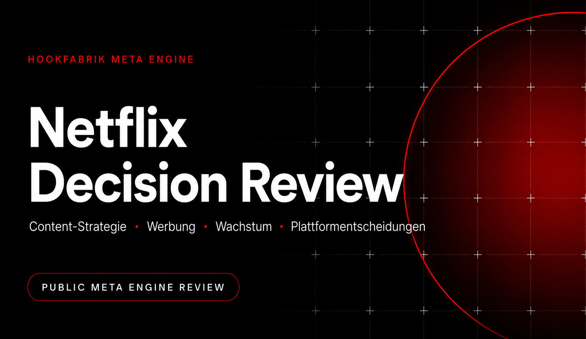

Der pandemische Nachfragevorsprung normalisierte sich. Streaming wurde vom Wachstumsmarkt zum Verdrängungsmarkt. Disney+, Max, Prime Video, Hulu, Apple TV+ und lokale Anbieter erhöhten zugleich Content-Ausgaben und Preisdruck.

Strategisches Decision Review
Netflix: War das werbefinanzierte Abonnement die richtige Entscheidung?
Eine öffentliche Meta-Engine-Session, die nicht die Vergangenheit nacherzählt, sondern die damalige Entscheidung unter realistischen Alternativen rekonstruiert und aus heutiger Sicht bewertet.
Kernurteil: Ja. Die Einführung war strategisch richtig – aber nicht als isoliertes Werbeprojekt. Ihre volle Wirkung entstand erst als Teil eines kombinierten Modells aus niedrigerem Einstiegspreis, Paid Sharing, Preisarchitektur und wachsender Werbetechnologie.
Was die Meta Engine bei dieser Aufgabe leisten sollte
Die Engine soll die Entscheidung nicht nachträglich rechtfertigen. Sie soll rekonstruieren, welche Optionen 2022 realistisch waren, welche Zielkonflikte bestanden und welche Option unter Unsicherheit am robustesten war.
1. Entscheidung zeitlich einfrierenBewertet wird mit dem Informationsstand von 2022 – nicht mit dem Wissen von 2026.
2. Optionen vollständig machenNicht nur „Werbung ja oder nein“, sondern Preis, Kosten, Content und Monetarisierung kombinieren.
3. Zielkonflikte sichtbar machenWachstum, Marge, Marke, Nutzererlebnis und strategische Flexibilität konkurrierten miteinander.
4. Wirkungsketten prüfenEine günstigere Stufe verändert Akquise, Kannibalisierung, Preissetzung und Werbeinventar gleichzeitig.
5. Gegenhypothesen testenWar die Erholung wirklich Werbung – oder vor allem Paid Sharing, Content und Konjunktur?
6. Urteil konditionierenEine richtige Entscheidung kann falsch umgesetzt werden; Erfolg hängt an Design und Sequenzierung.
Die relevante Frage lautet nicht: „Hat Werbung funktioniert?“ Sondern: „War Werbung 2022 die robusteste Antwort auf Sättigung, Preisdruck und unmonetarisierte Nutzung?“
Methodik und Evidenzlogik
Fakt direkt durch Netflix-Unterlagen oder etablierte Marktquellen belegt.
Schlussfolgerung aus mehreren Fakten abgeleitet.
Annahme plausible, aber öffentlich nicht vollständig überprüfbare Entscheidungsgrundlage.
Die Bewertung folgt der Meta Engine v3.7: Problemdefinition, Optionsraum, Kriterienmodell, Szenarien, Gegenhypothesen, Reality Check und strategische Synthese.
Executive Summary
−200.000Netto-Abonnenten Q1 2022
−970.000Netto-Abonnenten Q2 2022
12 MärkteStart des Ads-Plans 2022
>250 Mio.monatlich aktive Ads-Zuschauer 2026
Entscheidungslogik in einem Satz
Netflix musste aus einem reinen Premium-Abonnement ein flexibleres Erlösportfolio machen, ohne die werbefreie Kernmarke aufzugeben. Eine zusätzliche, günstigere Ads-Stufe erfüllte dieses Ziel besser als reine Preiserhöhungen, lineare Kostensenkungen oder eine radikale Content-Kürzung.
Urteil
Strategisch richtig, operativ zunächst unvollständig, langfristig stark. Der Schritt schuf Preiselastizität, einen neuen Erlösstrom und zusätzliche Verhandlungsmacht. Neue Komplexität, Datenschutzfragen und Markenrisiken waren real, aber beherrschbar.
1. Rekonstruktion der Ausgangssituation
Netflix hatte hohe, weitgehend fixe Content-Verpflichtungen. Sinkendes Nutzerwachstum traf deshalb nicht nur die Story am Kapitalmarkt, sondern die zentrale Skalierungslogik des Geschäftsmodells.
2022 meldete Netflix erstmals seit Jahren rückläufige Abonnentenzahlen. Gleichzeitig verwiesen rund 100 Millionen zusätzlich nutzende Haushalte außerhalb zahlender Accounts auf einen großen, bislang unmonetarisierten Nutzungspool.
Mehrere Konkurrenten waren bereits werbefinanziert oder bündelten Streaming mit größeren Ökosystemen. Netflix konkurrierte daher nicht nur um Abos, sondern gegen Querfinanzierung, Bundles und niedrigere Einstiegspreise.
Netflix hatte Werbung lange als schlechteres Nutzererlebnis positioniert. Ein Ads-Plan versprach Wachstum, widersprach aber dem bisherigen Reinheitsversprechen und erforderte neue Vertriebs-, Mess-, Datenschutz- und Technologiekompetenzen.
Die eigentliche Spannung
Netflix musste gleichzeitig drei Probleme lösen: preissensible Haushalte erreichen, bestehende Nutzer stärker monetarisieren und das Umsatzwachstum vom reinen Abonnentenwachstum entkoppeln.
2. Die eigentliche Entscheidungsfrage
Die Managementfrage war nicht: „Soll Netflix Werbung zeigen?“
Welche Kombination aus Preis, Produkt, Content und Monetarisierung stabilisiert Wachstum und Cashflow, ohne das Premium-Erlebnis irreversibel zu beschädigen?
Entscheidungskriterien
WachstumswirkungKann die Option neue oder bislang unmonetarisierte Nutzer erschließen?
Unit EconomicsVerbessert sie Erlös pro Nutzung und langfristigen freien Cashflow?
MarkenwirkungBleibt Netflix einfach, hochwertig und differenziert?
KundenwirkungErhöht sie Wahlfreiheit oder erzeugt sie Zwang, Friktion und Kündigungen?
UmsetzbarkeitKann Netflix die benötigten Fähigkeiten schnell genug aufbauen?
Option ValueEröffnet die Entscheidung weitere strategische Wege?
3. Realistische Handlungsoptionen
Option A · Premium-Modell unverändert beibehalten
ChanceMaximale Markenklarheit, geringe operative Komplexität, werbefreies Differenzierungsmerkmal.
RisikoKein Angebot für preissensible Nutzer; Wachstum bleibt vollständig von Abos und Preiserhöhungen abhängig.
Option B · Preise erhöhen
ChanceSchneller ARPU-Effekt ohne neues Geschäftsmodell; hohe Wirkung bei geringer Kündigungselastizität.
RisikoBeschleunigt Churn, Account Sharing und Abwanderung zu günstigeren Bundles.
Option C · Kosten und Content-Ausgaben deutlich senken
ChanceKurzfristig bessere Margen und Cashflows.
RisikoSchwächerer Content senkt Nutzung und erhöht Kündigungen; der Sparhebel beschädigt den Wachstumsmotor.
Option D · Content-Strategie radikal fokussieren
ChanceMehr Qualität pro investiertem Euro, stärkere Franchises, weniger Long-Tail-Verschwendung.
RisikoHohe Prognoseunsicherheit; globale Vielfalt und tägliche Relevanz könnten leiden.
Option E · Werbefinanziertes Modell einführen
ChanceNiedrigere Eintrittsschwelle, zusätzlicher Erlösstrom, Monetarisierung von Aufmerksamkeit, bessere Preisdifferenzierung.
RisikoKannibalisierung, Werbetech-Komplexität, Datenschutz, Lizenzlücken und mögliche Beschädigung des Nutzererlebnisses.
Option F · Kombinationsstrategie
ChanceAds-Plan + Paid Sharing + selektive Preise + Content-Disziplin adressieren mehrere Ursachen gleichzeitig.
RisikoViele parallele Eingriffe erschweren Attribution und können Kunden als koordinierte Monetarisierungsoffensive erscheinen.
4. Systematischer Optionsvergleich
Skala: 1 = schwach, 5 = sehr stark. Die Gewichtung priorisiert langfristige Wettbewerbsfähigkeit und Wachstum vor kurzfristiger Einfachheit.
| Option | Wachstum | Finanzen | Marke/Kunden | Wettbewerb | Umsetzung | Gesamt |
|---|---|---|---|---|---|---|
| A Premium unverändert | 1 | 2 | 5 | 2 | 5 | 2,8 |
| B Preise erhöhen | 2 | 4 | 2 | 2 | 5 | 3,0 |
| C Kosten senken | 1 | 4 | 2 | 2 | 4 | 2,6 |
| D Content fokussieren | 3 | 3 | 4 | 4 | 3 | 3,4 |
| E Ads-Plan | 5 | 4 | 3 | 5 | 2 | 3,9 |
| F Kombination | 5 | 5 | 3 | 5 | 3 | 4,3 |
Warum Werbung strategisch überlegen war
- Sie erweiterte den Markt. Eine günstigere Stufe erschloss Nutzer, die bei einem reinen Premiumpreis nicht oder nicht dauerhaft zahlten.
- Sie schuf einen zweiten Erlös pro Stunde Aufmerksamkeit. Netflix musste Wachstum nicht mehr ausschließlich über mehr Abos oder höhere Preise erzeugen.
- Sie bewahrte Wahlfreiheit. Werbung wurde als zusätzliche Stufe eingeführt, nicht als Zwang im Premiumprodukt.
- Sie erhöhte strategische Flexibilität. Das Unternehmen konnte Preise differenzieren, Bundles bauen und später eigene Werbetechnologie entwickeln.
- Sie passte zum Marktübergang. Aufmerksamkeit verlagerte sich aus linearem Fernsehen ins Streaming; Netflix konnte diesen Transfer monetarisieren.
5. Reality Check und Red Team
1
Gegenhypothese: Paid Sharing war der wahre Wachstumstreiber.
Teilweise richtig. Die Erholung kann nicht allein dem Ads-Plan zugeschrieben werden. Paid Sharing monetarisierte bestehende Nutzung direkter. Das schwächt die Behauptung „Ads rettete Netflix“, aber nicht die strategische Logik eines breiteren Erlösportfolios.
2
Gegenhypothese: Netflix hätte nur Preise erhöhen müssen.
Preiserhöhungen waren wirksam, hätten ohne günstigere Ausweichstufe jedoch den Churn- und Markenstress erhöht. Der Ads-Plan machte höhere Premiumpreise politisch und ökonomisch leichter.
3
Gegenhypothese: Werbung verwässert die Marke.
Das Risiko bestand. Es wurde begrenzt, weil das werbefreie Produkt erhalten blieb und der Ads-Plan später technisch verbessert wurde. Die Marke verschob sich von „immer werbefrei“ zu „beste Unterhaltung mit Wahlfreiheit“.
4
Gegenhypothese: Der Aufbau von Ad Tech ist eine Ablenkung.
Ein Fremdpartner ermöglichte Tempo, eigene Technologie erhöht später Kontrolle und Marge. Trotzdem entstehen neue organisatorische Komplexität und ein zweites Kundensystem neben den Zuschauern: Werbetreibende.
Welche neuen Probleme entstanden?
- Kannibalisierung höherpreisiger Abos und komplexere Preisarchitektur.
- Zwei gleichzeitig zu optimierende Kundenerlebnisse: Zuschauer und Werbekunden.
- Datenschutz-, Mess- und Brand-Safety-Anforderungen.
- Abhängigkeit von ausreichendem Inventar, Reichweite und Werbenachfrage.
- Gefahr, Content- und Produktentscheidungen zunehmend an Werbewirkung auszurichten.
Meta-Engine-Korrektur: Der Erfolg des Ads-Plans beweist nicht, dass jede Plattform Werbung einführen sollte. Netflix besaß außergewöhnliche globale Reichweite, hohe Nutzung, starke First-Party-Daten und ein Premium-Inventar. Ohne diese Voraussetzungen wäre dieselbe Entscheidung deutlich schwächer.
6. Bewertung der tatsächlich getroffenen Entscheidung
Urteil: Die Einführung war richtig. Die strategisch stärkere Entscheidung war jedoch nicht „Werbung“, sondern die Transformation von einem Ein-Produkt-Abo zu einer mehrschichtigen Monetarisierungsarchitektur.
Welche Probleme wurden gelöst?
- Ein niedrigerer Einstiegspreis verbesserte Reichweite und Akquise.
- Werbung reduzierte die Abhängigkeit von reinem Abonnentenwachstum.
- Die Stufe schuf eine Auffangoption bei Preiserhöhungen.
- Netflix gewann Zugang zum globalen TV-Werbebudget.
- Die Kombination mit Paid Sharing monetarisierte Nutzergruppen differenziert statt pauschal.
Welche Alternative wäre möglicherweise besser gewesen?
Keine einzelne Alternative war überlegen. Die stärkste denkbare Variante wäre eine früher vorbereitete Kombinationsstrategie gewesen: Ads-Plan, Paid Sharing, selektive Preiserhöhungen und Content-Produktivität als abgestimmtes Programm – mit klarer Kommunikation und eigener Ad-Tech-Roadmap von Beginn an.
Warum nicht früher?
Vor 2022 hätte Werbung unnötig Komplexität erzeugt und das Premiumversprechen geschwächt, solange das reine Abomodell noch stark wuchs. Nach 2022 wäre ein späterer Einstieg riskant gewesen, weil Wettbewerber Reichweite, Agenturbeziehungen und Werbetechnologie aufgebaut hätten. Der Zeitpunkt war daher nicht perfekt, aber strategisch plausibel.
7. Allgemeine strategische Erkenntnisse
1. Geschäftsmodellprinzipien sind keine DogmenWas eine Marke in der Wachstumsphase differenziert, kann in der Reifephase zur Einschränkung werden.
2. Preisarchitektur ist StrategieMehrere Stufen können Marktbreite und Premiumabschöpfung gleichzeitig ermöglichen.
3. Neue Erlösmodelle brauchen WahlfreiheitDie Akzeptanz steigt, wenn Kunden nicht in das neue Modell gezwungen werden.
4. Sequenzierung entscheidetAds, Paid Sharing und Preise wirkten stärker zusammen als isoliert.
5. Distribution allein reicht nichtWerbung wird erst durch Messung, Targeting, Einkaufssysteme und Vertrauen zu einem Geschäft.
6. Optionenwert ist ein EntscheidungskriteriumGute Strategien lösen nicht nur ein Problem, sondern öffnen weitere profitable Wege.
Übertragbares Prinzip: Wenn ein Kernmarkt reift, ist die stärkste Antwort häufig nicht die Maximierung des alten Modells, sondern eine kontrollierte Erweiterung, die neue Kundensegmente und Erlösquellen erschließt, ohne den Kern abzuschaffen.
Quellen und Evidenz
- Netflix: Ankündigung des werbefinanzierten Abos in Deutschland, 13. Oktober 2022
- Netflix: Einführung des Ads-Plans, 2. November 2022
- Netflix: Ein Jahr Netflix Ads, 1. November 2023
- Netflix: Zwei Jahre Ads, 12. November 2024
- Netflix Upfront 2025
- Netflix Upfront 2026
- Netflix Annual Reports 2022–2025
Quellenkritik: Reichweiten- und Werbewirkungsdaten stammen überwiegend von Netflix und dienen auch der Vermarktung. Sie belegen Skalierung, erlauben aber keine vollständige unabhängige Beurteilung der Werbeprofitabilität.
Annahmen und Grenzen
- Interne Entscheidungsunterlagen, Deckungsbeiträge nach Tarif und Kannibalisierungsdaten sind nicht öffentlich.
- Die Optionsbewertung rekonstruiert den plausiblen Entscheidungsraum; sie behauptet nicht, dass Netflix intern exakt dieselben Alternativen formal bewertet hat.
- Die Entwicklung seit 2022 ist multikausal. Ads, Paid Sharing, Content, Preise und Marktbedingungen lassen sich öffentlich nicht sauber isolieren.
- Die Bewertung setzt voraus, dass Werbedruck und Datenschutz so gesteuert werden, dass das Kernprodukt nicht substanziell erodiert.
- Die aktuelle Reichweite des Ads-Geschäfts zeigt Adoption, nicht automatisch dessen vollständige Profitabilität.
Kontakt & Kundenanfragen
Sie möchten eine vergleichbare Entscheidungsanalyse für Ihr Unternehmen, Ihren Markt oder eine konkrete strategische Weichenstellung?
Senden Sie eine kurze Anfrage per E-Mail oder kontaktieren Sie Hookfabrik direkt über LinkedIn.
Weitere Meta Engine Reviews
Weitere öffentliche Analysen aus der Meta Engine Review Bibliothek.